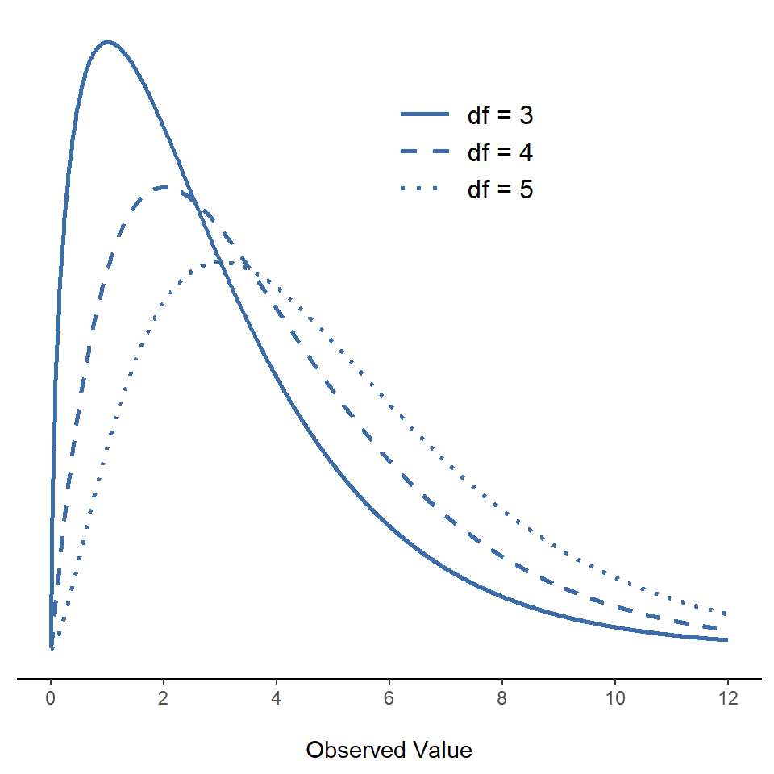
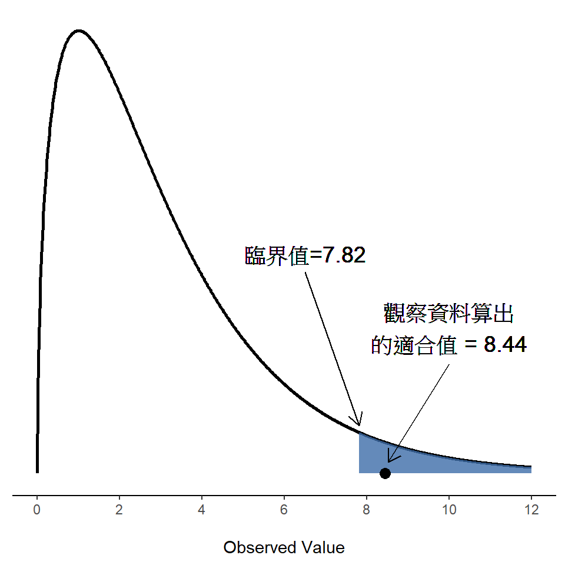
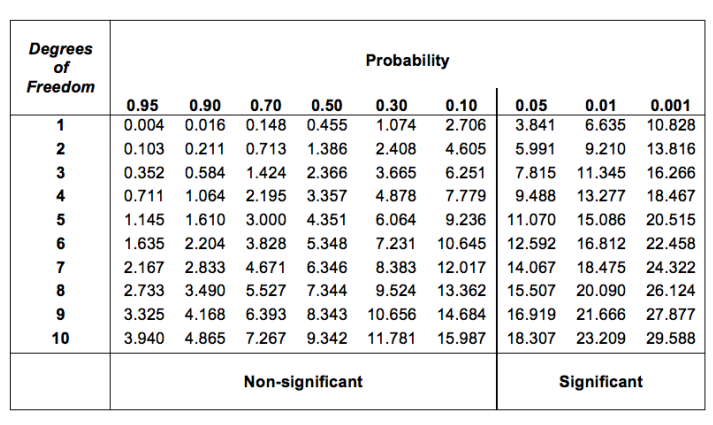
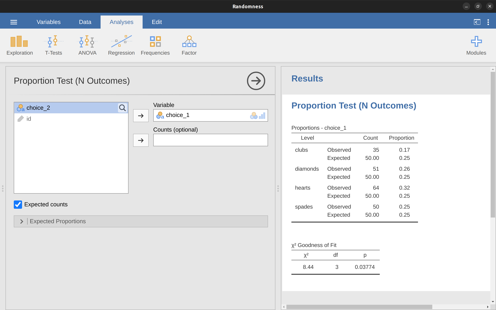
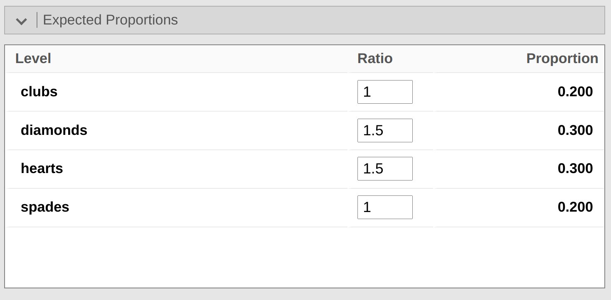
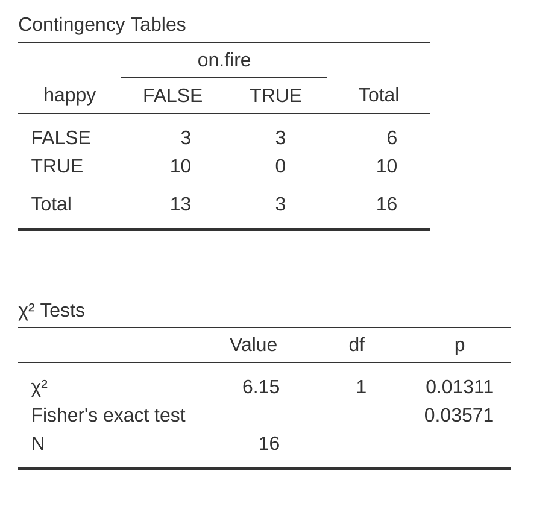
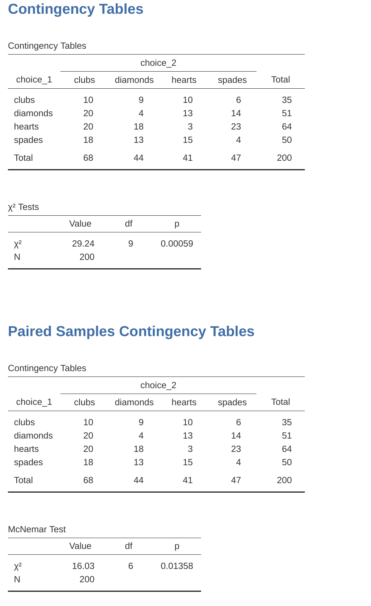

| clubs | diamonds | hearts | spades |
| 35 | 51 | 64 | 50 |
10 類別資料分析
譯者註 20230417初步以ChatGPT-4完成翻譯，內容待編修。
至此已經了解假設檢定的基本理論，是時候開始學習心理學研究常用的統計檢定方法。那麼應該從那種方法開始學習呢？並非所有教材作者都有共識，我(原作者)建議從“卡方檢定”（英文發音為“chi-square”1）和“t 檢定”（單元 11）開始。這兩種方法在科學研究實務經常被使用，雖然解析資料的威力不如後面單元介紹“迴歸分析”和“變異數分析”強大，對初學者來說相對容易理解。
“類別資料”（Categorical data）只是“名義尺度資料”（nominal scale data）的另一種稱呼。這不是本書尚未介紹的東西，只是在資料分析的場合，我不明白為何許多研究者習慣稱呼“類別資料”，而不是“名義尺度資料”。無論如何，類別資料分析是指處理名義尺度資料時，可以使用的一套統計方法。不過，專用於分析類別資料的方法非常多種，本單元僅介紹幾種較常用的方法。
10.1 卡方適合度檢定
卡方適合度檢定(goodness-of-fit test)是統計學者們最早開發出來的假設檢定方法之一。主要發明者是20世紀初的統計學者卡爾．皮爾森( Karl Pearson , 皮爾森相關係數以他的名字命名) (Pearson, 1900)，之後羅納德·費雪爵士(Sir Ronald Fisher) (Fisher, 1922) 做了一些改良，這個方法是檢定名義變項的觀察次數分佈是否符合預期次數分佈。像是有一組病人接受了實驗性治療，根據治療後的健康狀況分類，醫師紀錄病情是否有改善、保持不變或惡化，接著使用適合度檢定可以確定每個類別的人次，是否匹配標準治療後的預期人次。以下用一些心理學研究案例學習如何使用卡方適合度檢定。
10.1.1 撲克牌花色隨機選擇資料
過去幾十年許多人類模擬隨機現象的研究顯示，這是人類很難學成的能力。雖然每個人或多或少會試表“隨機行動”，依照模式和結構進行思考仍然是一般人難以擺脫的習慣，就算是被要求“隨機做某件事情”，實際上完全無法隨機行事，所以這類研究反過來揭露了許多人類的非隨機行為，其中透露我們如何看待世界的深刻心理問題。這一節的範例啟發自隨機行為研究，以此虛構一個非常簡單的研究。假如研究人員要求參與者想像一副已經洗好的撲克牌，然後從這副牌裡“隨機”選出一張牌。參與者選好想像中的牌之後，再選出第二張牌。參與者選擇好之後，再請他們說出選擇的花色（紅心、梅花、黑桃或方塊）。假如這個研究最後收集了 \(N = 200\) 個人選出的牌，研究人員想分析資料，確認一般人假裝選擇的撲克牌是否真的隨機。這份資料存在lsj檔案庫的 Randomness ，當讀者從 jamovi 的lsj檔案庫開啟這份資料的試算表，會看到三個變項：為每個參與者分配辨識碼id ，以及紀錄每個人先後選出的兩種撲克牌花色 choice_1 和 choice_2。
現在先看參與者第一次選擇的花色。開啟“Explore” - “Descriptives”的設定視窗，點選Frequency table選項計算每個花色被參與者們選擇的次數。得到的結果就如同 表 10.1 ：
這份小小的次數表非常有用。其中數字似乎暗示，參與者們可能偏好選擇紅心而且比較不想選擇梅花。只看表面數字並不能判斷這樣的差距是不是巧合，因此需要進行統計分析來找出答案，這就是下一節要學習的功課。
沒問題的話，接下來要分析 表 10.1 的資料囉。然後，這裡開始不得不用些數學符號討論這些資料，所以最好先認識一下每個符號的意義。首先是至目前為止一直提到“觀察值”，將用大寫字母\(O\)，而字母的下標表示觀察值在表格裡的位置。像是 表 10.1 的第二個觀察值可寫為\(O_2\)。表 10.2 說明每個花色的報告次數與代表符號之間的對應 。
| label | index, i | math. symbol | the value |
| clubs, \( \clubsuit \) | 1 | \( O_1 \) | 35 |
| diamonds, \( \diamondsuit \) | 2 | \( O_2 \) | 51 |
| hearts, \( \heartsuit \) | 3 | \( O_3 \) | 64 |
| spades, \( \spadesuit \) | 4 | \( O_4 \) | 50 |
希望這樣整理能讓你搞清楚。同時提醒一下，數學家更喜歡談論一般事物而不是具體事物，因此接著會一直看到\(O_i\)之類的符號，這是指在第 i 類別的觀察次數（其中 i 可能是 1，2，3 或 4）。最後，如果我們要在報告裡提及所有觀察次數，統計學家習慣將所有觀察值構成一個向量 2，本書稱為 \(O\)。
\[O = (O_1, O_2, O_3, O_4)\]
同樣的，這裡沒有什麼新奇有趣之處，一切只是符號。如果說 \(O = (35, 51, 64, 50)\)，就只是將描述觀察值的次數表，改用數學符號來表示而已。
10.1.2 虛無假設與對立假設
正如一開始的範例說明，研究者的假設是“一般人不會隨機選出想像中的撲克牌”。接著要做的是將這樣的假設說法，轉換為兩道統計假設，然後建構檢定這些統計假設的統計方法。這個範例需要的統計方法就是需要使用這一節要學習皮爾森 \(\chi^2\) 適合度檢定，建構適合度檢定的第一步是設定虛無假設，撲克牌範例的虛無假設是很簡單地。我們先用文字說明虛無假設：
\[H_0: \text{ 四種花色被選擇的機率相等}\]
在統計學課程，讀者要學習的項目之一是用數學表達虛無假設，這裡使用 \(P_j\) 表示第j種花色被參與者 選擇的真實機率。如果研究結果符合虛無假設，那麼任何一種花色都有 25% 的機率被選中。換句話說，以上的虛無假設說明用數學符號表達的方式是\(P_1 = .25\)，\(P_2 = .25\)，\(P_3 = .25\)， \(P_4 = .25\)。然後，因為統計學者習慣用向量符號涵括同一個變項的資料，在此用P表示虛無假設涵括的所有機率事件。也就是向量 \(P = (P_1, P_2, P_3, P_4)\) 表示虛無假設的機率事件集合，這麼一來可將虛無假設寫成：
\[H_0: P =(.25, .25, .25, .25)\]
這個範例的虛無假設對應機率向量 P，涵括的所有事件發生機率剛好相等，不過真實的研究條件不一定會是這樣。如同這個範例的實驗任務是讓參與者從想像中的一副撲克牌抽一張，若是這副牌的梅花數量是其他花色的兩倍，那麼虛無假設就要寫成\(P = (.4, .2, .2, .2)\)。只要機率值都是正數，且總和為 1，這樣的向量就是合法的虛無假設。因為許多使用適合度檢定的場景，是用來對付所有類別事件發生機率相等的虛無假設，以下討論繼續使用四種花色被選擇機率相等的虛無假設。
那麼對立假設 \(H_1\)是什麼呢？這則統計假設表示研究者感興趣的研究結果，也就是認為參與者的選擇不是完全隨機，因此四種花色的發生機率並不相等。所以兩則統計假設的白話版本看起來像這樣：
\(H_0: \text{ 四種花色被選擇的機率相等}\) \(H_1: \text{ 至少有一個選擇花色的機率不是 0.25}\)
…或者可寫成“數學家偏好的”版本：
\(H_0: P= (.25, .25, .25, .25)\) \(H_1: P \neq (.25, .25, .25, .25)\)
10.1.3 適合度檢定統計程序
在此階段，我們有我們觀察到的頻率 O 和一組與我們要測試的虛無假設相對應的機率 P。我們現在要做的是構造一個虛無假設的檢驗。與往常一樣，如果我們想要檢驗 \(H_0\) 和 \(H_1\)，我們將需要一個檢驗統計量。適合度檢驗所使用的基本技巧是構造一個檢驗統計量，用來衡量資料與虛無假設之間的“接近度”。如果資料與虛無假設為真時所期望的情況不相符，那麼它可能不是真的。好吧，如果虛無假設是真的，我們會看到什麼呢？或者，使用正確的術語，這些是什麼期望頻率。總共有 \(N = 200\) 次觀察，並且（如果虛無假設為真），任何一個選擇紅心的機率是 \(P_3 = .25\)，所以我猜我們期望 \(200 \times .25 = 50\) 顆紅心，對吧？或者，更具體地說，如果我們讓 Ei 指的是“在虛無假設為真時，我們期望觀察到的第 i 類反應的數量”，那麼
\[E_i=N \times P_i\]
這非常容易計算。如果有 200 個觀察可以分為四個類別，我們認為所有四個類別的可能性相等，那麼平均每個類別應該有 50 個觀察，對吧？
那麼，我們如何將這個轉換為檢驗統計量呢？顯然，我們要做的是比較每個類別的期望觀察數量（\(E_i\)）與該類別的實際觀察數量（\(O_i\)）。基於這種比較，我們應該能夠得出一個好的檢驗統計量。首先，讓我們計算虛無假設期望我們找到的數量和我們實際找到的數量之間的差異，也就是，我們計算“觀察到的值減去期望值”的差分數，\(O_i - E_i\)。這在 表 10.3 中說明。
| \( \clubsuit \) | \( \diamondsuit \) | \( \heartsuit \) | \( \spadesuit \) | |
| expected frequency \( E_i\) | 50 | 50 | 50 | 50 |
| observed frequency \( O_i\) | 35 | 51 | 64 | 50 |
| difference score \( O_i-E_i\) | -15 | 1 | 14 | 0 |
因此，根據我們的計算，顯然人們選擇紅心的次數比虛無假設預測的多，而選擇梅花的次數則少。然而，稍作思考便會發現，這些原始差異並非我們所尋求的。直覺上，當虛無假設預測觀察次數過少（就像紅心那樣）時，它與預測觀察次數過多（就像梅花那樣）一樣糟糕。因此，對於梅花有負數，對於紅心有正數有點奇怪。解決這個問題的一個簡單方法是將所有數字平方，這樣我們現在就可以計算平方差，\((E_i - O_i)^2\)。就像以前一樣，我們可以手工計算（表 10.4）。
| \( \clubsuit \) | \( \diamondsuit \) | \( \heartsuit \) | \( \spadesuit \) |
| 225 | 1 | 196 | 0 |
現在我們取得了進展。現在我們有了一組數字，在虛無假設做出糟糕預測時（梅花和紅心），數字很大，但在做出好的預測時（方塊和黑桃），數字很小。接下來，由於我將在稍後解釋的一些技術原因，讓我們也將這些數字除以期望頻率 Ei，因此我們實際上計算的是 \(\frac{(E_i-O_i)^2}{E_i}\)。由於我們例子中所有類別的 \(E_i = 50\)，所以這不是一個非常有趣的計算，但無論如何，讓我們這麼做（表 10.5）。
| \( \clubsuit \) | \( \diamondsuit \) | \( \heartsuit \) | \( \spadesuit \) |
| 4.50 | 0.02 | 3.92 | 0.00 |
實際上，我們在這裡得到的是四個不同的“誤差”得分，每個都告訴我們在嘗試用虛無假設預測我們的觀察頻率時，空假設所犯的“錯誤”有多大。因此，為了將其轉換為有用的檢驗統計量，我們可以做的一件事就是將這些數字加起來。結果被稱為適合度統計量，通常表示為 \(\chi^2\)（卡方）或 GOF。我們可以像 表 10.6 中那樣計算它。
\[\sum( (observed - expected)^2 / expected )\]
這給了我們一個 8.44 的值。
[額外的技術細節 3]
如我們從計算中看到的，在我們的卡片資料集中，我們得到了一個 \(\chi^2\) = 8.44 的值。那麼現在的問題是，這個值是否足夠大以拒絕虛無假設？
10.1.4 適合度檢定的樣本分佈
要確定某個 \(\chi^2\) 值是否足夠大，以便拒絕虛無假設，我們需要確定如果虛無假設為真，\(\chi^2\) 的抽樣分佈會是什麼。因此，在本節中我將做的就是這件事。我將詳細向您展示這個抽樣分佈的構建方式，然後在下一節中使用它構建一個假設檢驗。如果你想跳過本節的其他部分，並且願意相信抽樣分佈是具有 \(k - 1\) 自由度的 \(\chi^2\)（卡方）分佈，你可以跳過本節的其他部分。然而，如果您想了解為什麼適合度檢驗的工作方式是這樣的，請繼續閱讀。
好吧，讓我們假設虛無假設實際上是真的。如果是這樣，那麼觀察值落入第 i 類的真實機率是 \(P_i\)。畢竟，這幾乎就是我們的虛無假設的定義。讓我們思考一下這實際上意味著什麼。這有點像說“自然”通過翻轉一個加權硬幣（即，得到正面的機率是 \(P_j\) ）來決定觀察值是否最終落入第 i 類。因此，我們可以將觀察到的頻率 \(O_i\) 想像成自然界翻轉了 N 個這樣的硬幣（資料集中每個觀察值各有一個），並且其中正好 \(O_i\) 個硬幣是正面朝上。顯然，這是一種非常奇怪的思考實驗的方式。但是，這樣做（希望）是提醒你我們之前其實已經見過這種情景。這與 單元 7 中 小單元 7.4 部分所提到的設置完全相同。換句話說，如果虛無假設是真的，那麼我們的觀察頻率是由抽樣自二項分佈生成的：
\[O_i \sim Binomial(P_i,N) \]
現在，如果您還記得我們對 小單元 8.3.3 限定定理的討論，特別是當 \(N\) 較大且 \(P_i\) 與 0 或 1 不太接近時，二項分佈看起來幾乎與正態分佈相同。換句話說，只要 \(N^P_i\) 足夠大。或者，換句話說，當期望頻率 Ei 足夠大時，\(O_i\) 的理論分佈近似為正態分佈。更好的是，如果 \(O_i\) 是正態分佈的，那麼 \((O_i-E_i)/\sqrt{(E_i)}\) 也是正態分佈的。因為 \(E_i\) 是一個固定值，所以減去 Ei 並除以？ Ei 改變了正態分佈的均值和標準差，但這就是它所做的全部。好吧，現在讓我們看看我們的適合度統計量實際上是什麼。我們正在做的是取一堆近似正態分佈的東西，將它們平方，然後加起來。等等。我們之前也見過這個！正如我們在談論@sec-Other-useful-distributions時所討論的那樣，當您取一堆具有標準正態分佈（即，均值為 0 且標準差為 1）的東西，將它們平方然後加起來時，所得到的數量具有卡方分佈。所以現在我們知道了虛無假設預測適合度統計量的抽樣分佈是卡方分佈。很酷。
還有一個最後的細節要談論，即自由度。如果您回想一下@sec-Other-useful-distributions，我說過如果你加起來的東西數量是 k，那麼生成的卡方分佈的自由度就是 k。然而，在本節開始時我所說的是，卡方適合度檢驗的實際自由度是 \(k - 1\)。這是怎麼回事呢？答案在於，我們應該考慮的是被加在一起的真正獨立的東西數量。正如我將在下一節中談論的那樣，儘管我們加起來有 k 個東西，但只有 \(k - 1\) 個東西是真正獨立的，所以自由度實際上只有 \(k - 1\)。這就是下一節的主題4。
10.1.5 自由度

當我在@sec-Other-useful-distributions中介紹卡方分佈時，對於“自由度”的含義有點籠統。顯然，它很重要。觀察@fig-fig14-1，可以看到如果我們改變自由度，那麼卡方分佈的形狀會發生很大變化。但它究竟是什麼呢？同樣，當我介紹分佈並解釋它與正態分佈的關係時，我確實提供了一個答案：它是我要平方並相加的“正態分布變項”的數量。但是，對於大多數人來說，這有點抽象，並不十分有幫助。我們真正需要做的是嘗試根據我們的資料來理解自由度。下面就讓我們開始吧。
自由度背後的基本概念非常簡單。您計算它的方法是將描述資料的不同“數量”加起來，然後減去這些資料必須滿足的所有“約束”。5這有點籠統，所以讓我們用我們的撲克牌資料作為一個具體例子。我們使用四個數字來描述我們的資料，分別是 \(O1, O2, O3\) 和 \(O4\)，對應於四個不同類別（紅心，梅花，方塊，黑桃）的觀察頻率。這四個數字是我們實驗的隨機結果。但是我的實驗實際上內置了一個固定的約束：樣本大小 \(N\)。6也就是說，如果我們知道
有多少人選擇紅心，有多少人選擇方塊，以及有多少人選擇梅花，那麼我們就能確切地知道有多少人選擇黑桃。換句話說，雖然我們的資料是用四個數字描述的，但它們實際上只對應於 \(4 - 1 = 3\) 个自由度。稍微不同的思考方式是注意到我們感興趣的四個機率（同樣，對應於四個不同類別），但是這些機率必須加起來等於一，這將施加一個約束。因此，自由度是 \(4 - 1 = 3\)。無論您想用觀察頻率還是機率的方式來思考它，答案都是一樣的。通常，當進行涉及 \(k\) 個組的卡方適合度檢定時，自由度將為 \(k - 1\)。
10.1.6 檢定虛無假設
構建假設檢定的過程的最後一步是找出拒絕域是什麼。也就是說，哪些 \(\chi^2\) 值會讓我們拒絕虛無假設。如我們之前所見，\(\chi^2\) 的大值意味著虛無假設在預測我們實驗中的資料方面做得很差，而 \(\chi^2\) 的小值則意味著它實際上做得相當好。因此，一個相當明智的策略是說，有一個臨界值，如果 \(\chi^2\) 大於臨界值，我們拒絕虛無假設；但如果 \(\chi^2\) 小於這個值，我們保留虛無假設。換句話說，用我們在 單元 9 中引入的語言，卡方適合度檢定總是一個單邊檢定。好的，所以我們要做的就是找出這個臨界值。這很簡單。如果我們希望檢定具有顯著性水平 \(\alpha = .05\)（即，我們願意容忍 Type I 錯誤率為 \(5%\)），那麼我們必須選擇我們的臨界值，使得在虛無假設成立的情況下，\(\chi^2\) 達到那麼大的機率只有 5%。這在 圖 10.2 中得到了說明。

啊，但我聽到你問，如何找到具有 \(k-1\) 自由度的卡方分布的臨界值？很多很多年前，當我第一次上心理統計課時，我們曾經在一本臨界值表的書中查找這些臨界值，就像 圖 10.3 中那樣。看這個圖，我們可以看到具有 3 個自由度的 \(\chi^2\) 分布的臨界值，且 p=0.05 是 7.815。

因此，如果我們計算出的 \(\chi^2\) 統計量大於 7.815 的臨界值，那麼我們可以拒絕虛無假設（記住，虛無假設 \(H_0\) 是所有四個花色都以相等的機率被選擇）。既然我們之前已經計算過了（即，\(\chi^2\) = 8.44），我們可以拒絕虛無假設。基本上就是這樣了。現在你知道了“皮爾森卡方適合度檢定”。真幸運。
10.1.7 jamovi實作
毫不意外地，jamovi 提供了一個分析工具，可以幫你完成這些計算。讓我們使用 Randomness.omv 文件。在主要的“分析”工具欄中，選擇“頻率” - “單樣本比例檢驗” - “\(N\) 個結果”。然後在出現的分析視窗中將要分析的變項（從選擇 1 開始）移到“變項”框中。此外，單擊“預期計數”復選框，以便將這些資料顯示在結果表中。完成所有這些操作後，你應該會在 jamovi 中看到分析結果，如 圖 10.4。然後不出所料，jamovi 提供了與我們上面手動計算相同的預期計數和統計資料，\(\chi^2\) 值為 \((8.44\)，自由度為 \(3\)，\(p=0.038\)。注意，我們不再需要查找臨界 p 值閾值，因為 jamovi 給出了在 \(3\) 自由度下計算得出的 \(\chi^2\) 的實際 p 值。

10.1.8 另一種虛無假設
此時，你可能會想知道如果你想進行適合度檢驗，但你的虛無假設不是所有類別的機率都相等該怎麼辦。例如，假設有人提出了這樣的理論預測，即人們應該以 \(60\%\) 的機率選擇紅色牌，以 \(40\%\) 的機率選擇黑色牌（我不知道為什麼你會這樣預測），但沒有其他偏好。如果是這樣，虛無假設將期望選擇愛心的比例為 \(30\%\)，選擇方塊的比例為 \(30\%\)，選擇黑桃的比例為 \(20\%\)，選擇梅花的比例為 \(20\%\)。換句話說，我們期望愛心和方塊的出現次數是黑桃和梅花的 1.5 倍（\(30\%\) : \(20\%\) 的比例與 1.5 : 1 相同）。對我來說，這似乎是一個愚蠢的理論，但是用我們的 jamovi 分析可以很容易地測試這個明確指定的虛無假設。在分析視窗中（標記為“比例檢驗（N個結果）”的 圖 10.4 中，你可以展開“預期比例”的選項。當你這樣做時，將會出現一些選項，讓你為選定的變項輸入不同的比例值，在我們的案例中，這個變項是 choice 1。將比例更改為反映新的虛無假設，如 圖 10.5 所示，並觀察結果如何變化。

預期計數現在顯示在 表 10.6 中。
| \( \clubsuit \) | \( \diamondsuit \) | \( \heartsuit \) | \( \spadesuit \) | |
| expected frequency \( E_i\) | 40 | 60 | 60 | 40 |
\(\chi^2\) 統計量為 4.74，自由度為 3，\(p = 0.182\)。現在，我們更新的假設和預期頻率與上次的結果有所不同。因此，我們的 \(\chi^2\) 檢驗統計量和 p 值也有所不同。令人惱火的是，p 值為 \(.182\)，因此我們不能拒絕虛無假設（回顧 小單元 9.5 提醒自己為什麼）。可悲的是，儘管虛無假設對應著一個非常愚蠢的理論，這些資料並沒有提供足夠的證據來反駁它。
10.1.9 適合度檢定的報告寫作
現在你知道了這個測試的運作方式，也知道如何使用神奇的jamovi計算盒來進行測試。接下來你需要知道的是如何撰寫結果。畢竟，設計和執行實驗，然後分析資料，如果不告訴別人結果是沒有意義的！所以讓我們來談談在報告分析時需要做的事情。讓我們繼續以撲克牌花色為例。如果我想將這個結果寫成一篇論文之類的東西，那麼慣常的報告方式是這樣寫的：
在實驗的200名參與者中，有64人首選紅心，51人選擇方塊，50人選擇黑桃，35人選擇梅花。進行了卡方適合度檢驗以測試四種花色的選擇機率是否相同。結果顯著（\(\chi^2(3) = 8.44, p< .05\)），這表明人們在選擇花色時並非完全隨機。
這相當直接，希望它看起來很不起眼。儘管如此，你應該注意到這個描述中的幾點內容：
描述統計資料在統計檢驗之前。也就是說，在進行檢驗之前，我告訴讀者有關資料的一些信息。通常，這是一個很好的做法。永遠記住，你的讀者對你的資料了解得遠不如你。因此，除非你妥善地向他們描述，否則統計檢驗對他們來說毫無意義，他們會感到沮喪和哭泣。
描述告訴你正在測試的虛無假設是什麼。老實說，作者並不總是這樣做，但在存在一定歧義的情況下，或者在你不能依賴你的讀者非常熟悉你正在使用的統計工具時，這通常是一個好主意。很多時候讀者可能不知道（或記不起）你正在使用的檢驗的所有細節，所以提醒他們是一種禮貌！對於適合度檢驗來說，你通常可以依賴科學觀眾了解它的運作方式（因為它涵蓋在大多數入門統計課程中）。然而，明確陳述虛無假設（簡要地！）仍然是一個好主意，因為虛無假設可能因你使用檢驗的目的而有所不同。例如，在撲克牌的例子中，我的虛無假設是四個花色的機率相同（即，\(P1 = P2 = P3 = P4 = 0.25\)），但這個假設並沒有什麼特別的。我可以同樣使用適合度檢驗測試虛無假設，即\(P_1 = 0.7\)和\(P2 = P3 = P4 = 0.1\)。所以，向讀者解釋你的虛無假設是有幫助的。另外，注意到我用文字而不是數學描述虛無假設。這是完全可以接受的。你可以用數學描述它，但是因為大多數讀者發現文字比符號更容易閱讀，所以大多數作者傾向於用文字描述虛無假設（如果可以的話）。
包括”統計塊”。在報告檢驗結果本身時，我不僅僅說結果顯著，還包括了一個“統計塊”（即括號內密集的數學部分），其中報告了所有“關鍵”統計信息。對於卡方適應度檢驗，報告的信息包括檢驗統計量（即適應度統計量為8.44）、用於檢驗的分布信息（具有3個自由度的\(\chi^2\)，通常縮寫為\(\chi^2\)(3)），然後是結果是否顯著（在本例中為\(p< .05\)）。每個檢驗所需的統計塊中的特定信息各不相同，因此每次我介紹一個新檢驗時，我都會向您展示統計塊應該是什麼樣子。7 但是，一般原則是您應該始終提供足夠的信息，以便讀者在需要時可以自己檢查測試結果。
對結果進行解釋。除了指出結果顯著之外，我還提供了結果的解釋（即，人們沒有隨機選擇）。這對讀者也是一種友善，因為它告訴他們關於資料中發生了什麼事的一些信息。如果不包括這樣的東西，讀者很難理解發生了什麼事。8
正如其他所有事物一樣，你應該首要關注的是向讀者解釋事物。永遠記住，報告結果的目的是與另一個人溝通。我無法告訴您我看過多少次報告、論文甚至科學文章的結果部分就是胡言亂語，因為作者只關注確保包含所有數字，卻忘記了與人類讀者真正交流。
撒旦在統計和引用經文中同樣感到高興9 – H.G. 威爾斯
10.2 卡方獨立性檢定
警衛機器人 1：停！
警衛機器人 2：你是機器人還是人類？
莉娜：機器人…我們是。
弗萊：呃，對！只是兩個機器人在機器人世界裡像機器人一樣生活！呃？
警衛機器人 1：進行測試。
警衛機器人 2：以下哪一個是你最喜歡的？A：一只小狗，B：來自你心上人的漂亮花朵，或C：一個大的、格式正確的資料文件？
警衛機器人 1：選擇！
《飛出個未來》第一季第5集”Fear of a Bot Planet”台詞(1999~2003的美國情境喜劇；台灣無代理商引進播映)
有一天，我在觀看一部動畫紀錄片，研究Chapek 9星球上當地人的古怪風俗。顯然，要進入他們的首府，訪客必須證明他們是機器人而不是人類。為了確定訪客是否是人類，當地人會詢問訪客是喜歡小狗、花還是大型、格式正確的資料文件。我心想：“相當聰明，但如果人類和機器人有相同的喜好呢？那可能不是一個很好的測試了，對吧？”事實上，我得到了Chapek 9市民當局用來檢查這個問題的測試資料。他們所做的非常簡單。他們找了一堆機器人和一堆人，問他們喜歡什麼。我把他們的資料保存在一個名為chapek9.omv的文件中，現在我們可以將其加載到jamovi中。除了識別個人的ID變項外，還有兩個名義文本變項，species和choice。總共有180個條目在資料集中，每個人（將機器人和人類都算作“人”）被要求做出選擇。具體而言，有93個人類和87個機器人，絕大多數人選擇了資料文件。你可以通過在’探索’-‘描述統計’按鈕下詢問jamovi的頻率表來自己檢查這一點。然而，這個總結並沒有解決我們感興趣的問題。要做到這一點，我們需要對資料進行更詳細的描述。我們想要做的是查看按物種劃分的選擇。也就是說，我們需要對資料進行交叉分類（見@sec-Tabulating-and-cross-tabulating-data）。在jamovi中，我們使用’頻率’-‘列聯表’-’獨立樣本’分析來完成這個操作，我們應該得到一個類似@tbl-tab14-7的表格。
| Robot | Human | Total | |
| Puppy | 13 | 15 | 28 |
| Flower | 30 | 13 | 43 |
| Data | 44 | 65 | 109 |
| Total | 87 | 93 | 180 |
從這個表格中，我們可以很清楚地看到，絕大多數人類選擇了資料文件，而機器人在他們的選擇中則相對更均衡。撇開為什麼人類可能更喜歡選擇資料文件的問題（這確實看起來有點奇怪，承認吧），我們首要任務是確定資料集中人類選擇和機器人選擇之間的差異是否具有統計顯著性。
10.2.1 建立獨立性的假設檢定
我們如何分析這些資料？具體來說，由於我的研究假設是”人類和機器人回答問題的方式不同”，我該如何構建對虛無假設的檢驗，即”人類和機器人以相同的方式回答問題”？與以前一樣，我們首先建立一些符號來描述資料（表 10.8）。
| Robot | Human | Total | |
| Puppy | \(O_{11}\) | \(O_{12}\) | \(R_{1}\) |
| Flower | \(O_{21}\) | \(O_{22}\) | \(R_{2}\) |
| Data | \(O_{31}\) | \(O_{32}\) | \(R_{3}\) |
| Total | \(C_{1}\) | \(C_{2}\) | N |
在這個符號中，我們用 \(O_{ij}\) 表示被調查者在物種 j（機器人或人類）中選擇 i（小狗，花或資料）的計數（觀察頻率）。總觀察數通常表示為 \(N\)。最後，我用 \(R_i\) 表示行總數（例如，\(R_1\) 是選擇花的人的總數），用 \(C_j\) 表示列總數（例如，\(C_1\) 是機器人的總數）。10
那麼，現在讓我們考慮一下虛無假設是什麼。如果機器人和人類對這個問題的回答方式相同，那麼“機器人說小狗”的機率與“人類說小狗”的機率相同，對其他兩種可能性也是如此。所以，如果我們用 \(P_{ij}\) 表示“物種 j 的成員給出回應 i 的機率”，那麼我們的虛無假設是：
\[ \begin{aligned} H_0 &: \text{以下全部成立：} \\ &P_{11} = P_{12}\text{ （選擇“小狗”的機率相同），} \\ &P_{21} = P_{22}\text{ （選擇“花”的機率相同），以及} \\ &P_{31} = P_{32}\text{ （選擇“資料”的機率相同）} \end{aligned} \]
事實上，由於虛無假設聲稱真實的選擇機率不取決於做出選擇的人的物種，我們可以讓 Pi 代表這個機率，例如，P1 是選擇小狗的真實機率。
接下來，就像我們在適配度檢驗中所做的那樣，我們需要計算期望頻率。也就是說，對於每個觀察到的計數 \(O_{ij}\)，我們需要弄清楚虛無假設告訴我們期望什麼。我們用 \(E_{ij}\) 表示這個期望頻率。這次，情況有點棘手。如果物種 \(j\) 中有 \(C_j\) 人，而無論物種如何選擇選項 \(i\) 的真實機率為 \(P_i\)，那麼期望頻率只是：
\[E_{ij}=C_j \times P_i\]
現在，這固然很好，但我們遇到了一個問題。與適配度檢驗的情況不同，虛無假設實際上並未指定 Pi 的特定值。
這是我們必須估計（見 單元 8）的資料！幸運的是，這非常容易做到。如果有 28 位擇一的人選擇了花朵，那麼選擇花朵的機率的自然估計就是 \(\frac{28}{180}\)，大約是 \(0.16\)。如果我們用數學語言來表示，我們所說的是，選擇選項 i 的機率估計只是行總數除以總樣本量：
\[\hat{P}_{i}= \frac{R_i}{N}\]
因此，我們的期望頻率可以寫成行總數和列總數的乘積（即相乘），除以總觀察次數：11
\[\hat{E}_{ij}= \frac{R_i \times C_j}{N}\]
[額外的技術細節12]
與以前一樣，\(X^2\) 的大值表示虛無假設對資料的描述效果不佳，而 \(X^2\) 的小值則表示虛無假設對資料的解釋效果很好。因此，就像上次一樣，如果 \(X^2\) 太大，我們希望拒絕虛無假設。
不出所料，這個統計量遵循 \(\chi^2\) 分布。我們需要做的就是弄清楚有多少自由度，實際上這並不困難。如我之前提到的，你可以（通常）將自由度視為等於你正在分析的資料點數量，減去約束的數量。具有 r 行和 c 列的列聯表包含總共 \(r^{c}\) 個觀察到的頻率，所以這是觀察到的總數量。約束呢？在這裡，情況稍微複雜一些。答案始終是相同的
\[df=(r-1)(c-1)\]
但是根據實驗設計，解釋為什麼自由度具有此值的原因是不同的。為了便於說明，假設我們確實打算調查 87 台機器人和 93 人（實驗者固定列總數），但讓行總數自由變化（行總數是隨機變項）。讓我們考慮在這裡適用的約束。好吧，因為我們故意通過實驗者的行為固定了列總數，所以在這裡就有 c 個約束。但實際上，還有更多的約束。記住我們的虛無假設中有一些自由參數（即，我們不得不估計 Pi 值）？這些也很重要。在這本書中，我不會解釋為什麼，但虛無假設中的每個自由參數都像是一個額外的約束。那麼，這些參數有多少呢？好吧，由於這些機率必須加起來等於 1，所以只有 \(r - 1\) 個。因此，我們的自由度總數是：
\[ \begin{split} df & = \text{(number of observations) - (number of constraints)} \\\\ & = (r \times c) - (c + (r - 1)) \\\\ & = rc - c - r + 1 \\\\ & = (r - 1)(c - 1) \end{split}\]
另一種假設，假設實驗者確定的唯一事物是總樣本量 N。也就是說，我們對見到的前 180 人進行了問卷調查，結果發現 87 人是機器人，93 人是人類。這一次，我們的推理會有所不同，但仍然會得到相同的答案。我們的虛無假設仍然有 \(r - 1\) 個自由參數，對應於選擇機率，但現在還有 \(c - 1\) 個自由參數，對應於種類機率，因為我們還必須估計隨機抽樣的人類確實是機器人的機率。13 最後，由於我們確實確定了觀察數量的總數 N，所以這是另一個約束。因此，現在我們有 rc 次觀察，並且有 \((c-1)+(r-1)+1\) 約束。這會給出什麼呢？
\[\begin{split} df & = \text{(number of observations) - (number of constraints)} \\\\ & = (r \times c) - ((c-1) + (r - 1)+1) \\\\ & = (r- 1)(c - 1) \end{split} \]
真是令人驚奇。
10.2.2 獨立性檢定實作
好吧，既然我們知道了檢驗是如何進行的，讓我們看看如何在 jamovi 中完成它。雖然讓您長時間地經歷繁瑣的計算以便被迫學習可能很有吸引力，但我認為這是沒有意義的。在上一節中，我已經向您展示了如何針對適合度檢驗進行長時間的操作，而且由於獨立性檢驗在概念上沒有任何不同，所以您不會通過長時間的操作學到任何新的東西。因此，我將直接向您展示簡單的方法。在 jamovi 中運行檢驗（“頻率” - “列聯表” - “獨立樣本”）之後，您只需查看 jamovi 結果窗口中列聯表下方，那裡就是 \(\chi^2\) 統計量。這顯示了一個 \(\chi^2\) 統計值為 10.72，2 d.f.，p-value = 0.005。
那很簡單，不是嗎？您還可以要求 jamovi 顯示預期計數 - 只需單擊“Cells”選項中的“Counts” - “Expected”複選框，預期計數將出現在列聯表中。同時，在此操作中，效果大小度量會有所幫助。我們將選擇 Cramér’s \(V\)，您可以在“Statistics”選項中的複選框中指定它，它會給出 Cramér’s \(V\) 的值為 \(0.24\)。參見 圖 10.6。我們稍後會再談論這個問題。
這個輸出為我們提供了足夠的信息來寫出結果：
Pearson 的 \(\chi^2\) 顯示了物種和選擇之間存在顯著關聯（\(\chi^2(2) = 10.7, p< .01\)）。機器人似乎更傾向於說他們喜歡花，而人類更傾向於說他們喜歡資料。
注意，再次，我提供了一些解釋，以幫助人類讀者理解資料發生的情況。稍後在我的討論部分，我會提供更多的上下文。舉例來說，這是我可能會在之後說的：
人類似乎比機器人更喜歡原始資料文件，這有點反直覺。但在某種程度上，它是有道理的，因為 Chapek 9 上的民事當局往往在發現人類時會將其殺死並解剖。因此，最有可能的是，人類參與者並未如實回答問題，以避免可能產生不良後果。這應該被認為是一個嚴重的方法論缺陷。
我想，這可以被歸類為反應效應的一個極端例子。顯然，在這種情況下，問題嚴重到研究幾乎毫無價值，作為理解人類和機器人之間的差異偏好的工具。然而，我希望這能夠說明在獲得統計顯著結果（我們拒絕虛無假設，轉而接受替代假設）和找到具有科學價值的東西（由於嚴重的方法論缺陷，資料對我們研究假設的興趣一無所知）之間的區別。
10.3 卡方檢定的校正
好吧，是時候稍作偏離了。到目前為止，我對您有點不誠實。當您只有 1 個自由度時，需要對計算稍作改變。這被稱為 “連續性修正”，或者有時稱為葉氏修正。請記住我之前指出的：\(\chi^2\) 檢定是基於一個近似值，具體來說，是假設當 \(N\) 較大時，二項分佈開始類似於正態分佈。這樣做的一個問題是，它通常並不完全奏效，尤其是當你只有 1 個自由度時（例如，當你對一個 \(2 \times 2\) 的列聯表進行獨立性檢定時）。造成這一現象的主要原因是，\(X^{2}\) 統計量的真實抽樣分佈實際上是離散的（因為您在處理分類資料！），但 \(\chi^2\) 分佈是連續的。這可能引入系統性問題。具體來說，當 N 很小且 \(df = 1\) 時，適合度統計量往往 “太大”，這意味著您實際上的α值比您想象的要大（或者等效地說，p值稍微太小）。
根據我從閱讀葉氏論文14中獲得的了解，修正基本上是一個突破。它不是源於任何原則性的理論。相反，它是基於對檢定行為的觀察，並發現經過修正的版本似乎效果更好。您可以在 jamovi 的 ‘Statistics’ 選項中的復選框中指定這個修正，其中它被稱為 ‘\(\chi^2\) 連續性修正’。
10.4 卡方檢定的效果量
正如我們在 小單元 9.8 中早先討論的，要求研究人員報告某種效應量測的情況越來越普遍。因此，假設您已經進行了卡方檢定，結果顯示具有顯著性。所以您現在知道您的變項之間存在某種關聯（獨立性檢定）或與指定機率的某種偏差（適合度檢定）。現在，您想報告一個效應量測。也就是說，假設存在關聯或偏差，其強度如何？
您可以選擇報告幾種不同的測量值，並使用幾種不同的工具來計算它們。我不會討論所有這些測量值，而是將重點放在最常報告的效應大小測量值上。
默認情況下，人們最常報告的兩個度量是 \(\phi\) 統計量，以及稍稍優越的版本，稱為克拉默的 \(V\) 。
[額外的技術細節15]
完成後，這似乎是一個相當受歡迎的度量標準，可能是因為它易於計算，並且給出的答案並不是完全愚蠢的。有了克拉默的 \(V\)，您知道這個值確實在 0（完全無關聯）和 1（完全關聯）之間變化。
10.5 卡方檢定的適用條件
所有統計檢驗都有一定的假設，通常檢查這些假設是否符合是一個好主意。對於本章迄今為止討論的卡方檢驗，其假設包括：
- 期望頻率足夠大。還記得我們在上一節看到的 \(\chi^2\) 抽樣分佈是如何產生的嗎？因為二項分佈非常類似於正態分佈，正如我們在 單元 7 中討論的那樣，這只有在觀察次數足夠多的情況下才成立。實際上，這意味著所有的期望頻率都需要相對較大。什麼是合理的大小？意見不一，但默認的假設似乎是你通常希望看到所有的期望頻率都大於大約5，儘管對於更大的表格，如果至少80%的期望頻率在5以上，並且沒有一個低於1，那可能還可以。然而，從我所能發現的資料（例如， Cochran (1954) ）來看，這些似乎是作為粗略指導原則提出的，而不是硬性規定，而且它們似乎有些保守 (Larntz, 1978)。
- 資料彼此獨立。卡方檢驗的一個稍微隱藏的假設是，你必須真正相信觀察結果是獨立的。我舉個例子。假設我對在某個特定醫院出生的男嬰的比例感興趣。我在產科病房走來走去，觀察到20個女孩和只有10個男孩。看起來是相當明顯的差異，對吧？但稍後，原來我實際上走進了同一個病房10次，事實上我只看到了2個女孩和1個男孩。現在不那麼令人信服了，是吧？我的原始30個觀察結果大量地不獨立，實際上只相當於3個獨立的觀察結果。顯然這是一個極端（而且非常愚蠢）的例子，但它說明了基本問題。非獨立性會“搞砸事情”。有時它會導致你錯誤地拒絕虛無假設，就像愚蠢的醫院例子那樣，但它也可能朝相反的方向發展。為了給出一個稍微不那麼愚蠢的例子，讓我們考慮一下如果我對卡片實驗做了一些不同的嘗試會怎麼樣。假設我不是要求200個人嘗試想像隨機抽取一張卡片，而是要求50個人選擇4張卡片。其中一種可能是每個人都選擇一張紅心、一張梅花、一張方塊和一張黑桃（符合“代表性啟發法則”(Tversky & Kahneman, 1974)）。這是人們的高度非隨機行為，但在這種情況下，我對四種花色都會得到50的觀察頻率。對於這個例子，觀察結果非獨立性（因為你選擇的四張卡片之間將彼此關聯）實際上導致了相反的效果，即錯誤地保留了虛無假設。
如果你碰巧處於獨立性受到違反的情況，你可以使用 McNemar 檢驗（我們將討論）或 Cochran 檢驗（我們不會討論）。同樣，如果你的預期單元計數太小，可以查看 Fisher 確切檢驗。我們現在將轉向這些主題。
10.6 費雪精確檢定
如果你的單元計數太小，但你仍然想檢驗兩個變項是否獨立的虛無假設，該怎麼辦？一個答案是“收集更多資料”，但這太輕浮了。有很多情況下，進行此操作要么不可行，要么不道德。如果是這樣，統計學家有一種道德責任，為科學家提供更好的檢驗方法。在這個例子中， Fisher (1922) 恰好提供了問題的正確答案。為了說明這個基本概念，假設我們正在分析一個田野實驗的資料，研究被指控為巫術的人的情感狀況，其中一些人正在被燒死。16 不幸的是，對於科學家來說（但對普通大眾來說相當幸運），實際上很難找到正在被點火的人，所以在某些情況下，單元計數非常小。salem.csv 資料的列聯表說明了這一點（表 10.9）。
| happy | FALSE | TRUE | |
| on.fire | FALSE | 3 | 10 |
| TRUE | 3 | 0 |
查看這些資料，你會很難不懷疑沒有被點火的人比正在被點火的人更可能感到快樂。然而，由於樣本量很小，卡方檢驗使得這一點很難檢驗。所以，作為一個不想被點火的人，我非常希望能得到比這更好的答案。這就是費雪精確檢定（Fisher’s exact test）(Fisher, 1922) 派上用場的地方。
費雪精確檢定的運作方式與卡方檢定（事實上，在本書中我談論的任何其他假設檢定）有所不同，因為它沒有檢定統計量，而是“直接”計算 p 值。我將解釋該檢定在 \(2 \times 2\) 列聯表中的運作基本原理。與以前一樣，讓我們使用一些符號（表 10.10）。
| Happy | Sad | Total | |
| Set on fire | \(O_{11}\) | \(O_{12}\) | \(R_{1}\) |
| Not set on fire | \(O_{21}\) | \(O_{22}\) | \(R_{2}\) |
| Total | \(C_{1}\) | \(C_{2}\) | \(N\) |
為了構建檢定，費雪將行和列總數（\(R_1, R_2, C_1\) 和 \(C_2\)）都視為已知的固定量，然後計算在給定這些總數的情況下，我們會得到我們所觀察到的頻率（\(O_{11}, O_{12}, O_{21}\) 和 \(O_{22}\)）的機率。在我們在 單元 7 中開發的表示法中，這是寫作：
\[P(O_{11}, O_{12}, O_{21}, O_{22} \text{ | } R_1, R_2, C_1, C_2)\] 並且如您所料，弄清楚這個機率是什麼有點困難。但事實證明，這個機率是由一個稱為超幾何分佈的分佈描述的。要計算我們的 p 值，我們必須計算觀察到這個特定表格或者一個更“極端”的表格的機率。17 在 20 世紀 20 年代，即使在最簡單的情況下，計算這個和也是令人生畏的，但如今只要表格不是太大，樣本量不是太大，這就相當容易了。概念上棘手的問題是弄清楚一個列聯表比另一個列聯表更“極端”的含義。最簡單的解決方案是說，機率最低的表格是最極端的。這將給我們 p 值。
您可以在 jamovi 中的“列聯表”分析中的“統計”選項中的復選框中指定此檢定。當您使用 salem.csv 文件中的資料執行此操作時，費雪精確檢定統計量將顯示在結果中。我們在這里感興趣的主要是 p 值，這個例子中 p 值足夠小（p = .036），足以證明拒絕那些正在燃燒的人和沒有燃燒的人一樣快樂的虛無假設。參見 圖 10.7。

10.7 麥內瑪檢定
假設您被聘請為澳大利亞通用政治黨(AGPP)工作18，您的工作的一部分是了解AGPP政治廣告的有效性。因此，您決定組織一個包含\(N = 100\)人的樣本，讓他們觀看AGPP的廣告。在他們看到任何內容之前，您問他們是否打算投票支持AGPP，然後在播放廣告之後再問他們一遍，看看有沒有人改變主意。顯然，如果你擅長你的工作，你還會做很多其他事情，但讓我們考慮一下這個簡單的實驗。描述資料的一種方法是通過 表 10.11 中顯示的列聯表。
| Before | After | Total | |
| Yes | 30 | 10 | 40 |
| No | 70 | 90 | 160 |
| Total | 100 | 100 | 200 |
首先，您可能會認為這種情況適合用皮爾森\(\chi^2\)檢驗獨立性（如[獨立性（或關聯性）的\(\chi^2\)檢驗]）。然而，稍加思考就會發現我們遇到了一個問題。我們有100名參與者，但卻有200個觀察值。這是因為每個人在”之前”的列和”之後”的列中都給出了答案。這意味著這200個觀察值彼此之間並不獨立。如果選民A第一次說“是”，選民B說“否”，那麼您就可以預期選民A第二次比選民B更可能說“是”！由於獨立性假設的違反，這意味著通常的\(\chi^2\)檢驗不會給出可靠的答案。現在，如果這是一個非常不常見的情況，我不會浪費你的時間來討論它。但它並不罕見。這是一個標準的重複測量設計，而到目前為止，我們考慮的所有測試都無法處理它。哎呀。
問題的解決方案是麥內瑪（McNemar，1947）發表的。訣竅是先用稍微不同的方式整理資料（表 10.12）。
| Before: Yes | Before: No | Total | |
| After: Yes | 5 | 5 | 10 |
| After: No | 25 | 65 | 90 |
| Total | 30 | 70 | 100 |
接下來，讓我們思考一下我們的虛無假設是什麼：它是“之前”測試和“之後”測試中有相同比例的人說：“是的，我會投票支持AGPP。” 由於我們已經重新整理了資料，這意味著我們現在正在測試行總數和列總數來自相同分佈的假設。因此，麥內瑪檢驗中的虛無假設是邊際同質性。也就是說，行總數和列總數具有相同的分佈：\(P_a + P_b = P_a + P_c\)，同樣地，\(P_c + P_d = P_b + P_d\)。注意，這意味著虛無假設實際上簡化為Pb = Pc。換句話說，就麥內瑪檢驗而言，只有這個表格中的對角線條目（即b和c）才是重要的！注意到這一點後，麥內瑪邊際同質性檢定(McNemar test of marginal homogeneity)與通常的\(\chi^2\)檢驗沒有什麼不同。在應用Yates修正後，我們的檢驗統計量變為：
\[\chi^2=\frac{(|b-c|-0.5)^2}{b+c}\] 或者，恢復到我們在本章前面使用的表示法：
\[\chi^2=\frac{(|O_{12}-O_{21}|-0.5)^2}{O_{12}+O_{21}}\] 這個統計量具有\(\chi^2\)分佈（近似），自由度df = 1。然而，請記住，就像其他\(\chi^2\)檢驗一樣，它只是一個近似值，因此您需要預期較大的單元格計數才能使其正常工作。
10.7.1 實作麥內瑪檢定
現在您已經了解麥內瑪檢驗的所有內容，讓我們實際運行一個。agpp.csv 文件包含了我之前討論過的原始資料。agpp 資料集包含三個變項，一個id變項標記資料集中的每個參與者（我們將在片刻之後看到這有什麼用），一個response_before 變項記錄了當他們第一次被問到這個問題時的答案，以及一個response_after變項顯示他們在第二次被問到同樣問題時給出的答案。注意每個參與者在這個資料集中只出現一次。在jamovi中，轉到 ‘Analyses’ - ‘Frequencies’ - ‘Contingency Tables’ - ‘Paired Samples’ 分析，並將response_before 放入 ‘Rows’ 框，將response_after 放入 ‘Columns’ 框。然後，您將在結果窗口中獲得一個列聯表，麥內瑪檢驗的統計資料就在它下面，參見 圖 10.8 。
我們完成了。我們剛剛運行了一個麥內瑪檢驗，以確定人們在廣告後是否和廣告前一樣有可能投票支持AGPP。檢驗是顯著的（\(\chi^2(1)= 12.03, p< .001\)），表明他們並非如此。事實上，看起來廣告產生了負面影響：人們在看過廣告後，投票支持AGPP的可能性更低。考慮到典型政治廣告的質量，這是很合理的。
10.7.2 與獨立性檢定有可分別?
讓我們回到本章的開頭，再次查看卡片資料集。如果您回憶一下，我描述的實際實驗設計涉及人們進行兩次選擇。因為我們有關於每個人第一次選擇和第二次選擇的信息，我們可以構建以下列聯表，用於將第一次選擇與第二次選擇交叉列聯（表 10.13）。
| Before: Yes | Before: No | Total | |
| After: Yes | \(a \) | \(b \) | \(a + b \) |
| After: No | \(c \) | \(d \) | \(c + d \) |
| Total | \(a+c \) | \(b+d \) | \(n \) |
假設我想知道第二次選擇是否取決於第一次選擇。這是獨立性檢驗有用的地方，我們試圖做的是看看這個表格的行和列之間是否存在某種關係。
另外，假設我想知道平均而言，第二次選擇的花色頻率是否與第一次選擇不同。在這種情況下，我真正想做的是看看行總數是否不同於列總數。這就是您使用麥內瑪檢驗的時候。
這些不同分析產生的不同統計資料顯示在 圖 10.9 中。注意結果是不同的！這些檢驗並不相同。

10.8 本章小結
本章的學習重點有：
- 卡方適合度檢定用於你的表列資料是來自不同類別的觀察次數，虛無假設是可相互比較的已知機率。
- 卡方獨立性或關聯性檢定用於你的資料是能化為列聯表的觀察次數。虛無假設是兩種變項之間沒有關聯性。
- 列聯表的效果量有多種測量方法。在此介紹最常見的Cramér’s V。
- 上述的卡方檢定法有兩種適用條件：期望值次數夠大，觀察值彼此獨立。如果期望值次數不夠大，可以使用費雪精確檢定；如果觀察值並非彼此獨立，可以使用麥內瑪檢定。
如果想學習更多類別資料分析方法，推薦閱讀 Agresti (1996) 的專書”類別資料分析導論”。如果基礎教科書無法滿足你的需要，或者未提供解決手上問題的方法，可以參考 Agresti (2002) 的進階書藉。因為是進階書，建議先充分理解導論再來學習進階教科書。
繁體中文報告常直接稱呼“卡方”。↩︎
向量是由相同測量尺度的資料值所構成的序列。↩︎
如果我們讓 k 指的是總類別數（即，對於我們的卡片資料，k = 4），則 \(\chi^2\) 統計量由以下公式給出：\[\chi^2 = \sum_{i=1}^{k} \frac{(O_i-E_i)^2}{E_i}\] 直觀地說，如果 \(chi^2\) 很小，那麼觀察到的資料 Oi 與虛無假設預測的 \(E_i\) 非常接近，因此我們需要一個很大的 \(\chi^2\) 統計量來拒絕虛無假設。↩︎
如果將適合度統計量的方程式重寫為 k - 1 個獨立東西之和，您將得到“正確的”抽樣分佈，即具有 k - 1 自由度的卡方分佈。在這本入門書中，展示這麼多細節的數學超出了範疇。我只想給您一個為什麼適合度統計量與卡方分佈相關的感覺。↩︎
我有責任指出，這是一個過於簡化的說法。它適用於很多情況，但偶爾我們會遇到自由度值不是整數的情況。不要讓這個問題過於困擾您；遇到這個問題時，只需提醒自己“自由度”實際上是一個有點混亂的概念，而且我在這裡告訴您的簡單故事並不是全部故事。對於一個入門課程，通常最好堅持簡單的故事，但我認為最好警告您期望這個簡單的故事會崩潰。如果我沒有給您這個警告，您可能會在看到 \(df = 3.4\) 或類似的東西時開始困惑（錯誤地）認為您理解錯了我教給您的東西，而不是（正確地）意識到有些事情是我沒有告訴您的。↩︎
實際上，樣本大小並不總是固定的。例如，我們可能在固定時間內運行實驗，參與人數取決於有多少人出現。對於當前的目的，這並不重要↩︎
嗯，有點。如何報告統計資料的慣例在不同的學科之間有所不同。我傾向於堅持心理學的做法，因為這就是我的工作。但是，我認為向讀者提供足夠的信息，以便他們可以檢查你的結果的一般原則是相當普遍的。↩︎
對有些人來說，這個建議可能聽起來有點奇怪，或者至少與編寫技術報告的“通常”建議相衝突。通常，學生們被告知報告的“結果”部分是用來描述資料並報告統計分析，而“討論”部分是提供解釋的。這在某種程度上是對的，但我認為人們經常過於照字面解釋它。我通常的做法是在結果部分提供對資料的快速而簡單的解釋，以便我的讀者理解資料告訴我們什麼。然後，在討論中，我嘗試講述一個關於我的結果如何與其他科學文獻相適應的更大的故事。簡而言之，不要讓“解釋屬於討論”這個建議使你的結果部分變得難以理解。讓讀者明白你的意思更重要。↩︎
如果你一直在仔細閱讀，並且像我一樣是一個數學苛刻的人，那麼上一節中我寫卡方檢驗的方式可能會讓你有點困擾。你可能會想，用 “\(\chi^2(3) = 8.44\)” 這樣寫感覺有點不對勁。畢竟，是適合度統計數等於8.44，所以我不應該寫 \(X^2 = 8.44\) 或者 \(GOF = 8.44\) 嗎？這似乎混淆了抽樣分布（即\(\chi^2\)與df=3）與檢驗統計量（即\(X^2\)）。可能性是你認為這是錯字，因為\(\chi\)和X看起來非常相似。奇怪的是，這並非如此。寫 \(\chi^2\)(3)= 8.44 本質上是一種高度縮略的寫法，表示“檢驗統計量的抽樣分布為\(\chi^2\)(3)，檢驗統計量的值為8.44”。從某種意義上說，這有點愚蠢。有很多不同的檢驗統計量最終具有卡方抽樣分布。我們用於適合度檢驗的\(X^2\)統計量只是眾多統計量中的一種（儘管是最常見的一種）。在一個明智、完全組織的世界裡，我們總是為檢驗統計量和抽樣分布分配一個單獨的名字。這樣，統計塊本身就可以告訴你研究者究竟計算了什麼。有時這確實是可能的。例如，Pearson適合度檢驗中使用的檢驗統計量寫作\(X^2\)，但還有一種與G-test\(^a\) (Sokal & Rohlf, 1994)關係密切的檢驗稱為G-test，其中檢驗統計量寫作\(G\)。事實上，Pearson適合度檢驗和G-test都檢驗相同的虛無假設，抽樣分布完全相同（即，具有\(k-1\)自由度的卡方分布）。如果我對卡片資料進行G-test而不是適合度檢驗，那麼我最終會得到一個檢驗統計量\(G = 8.65\)，它略有不同於我之前得到的\(X^2 = 8.44\)值，並產生稍微小一點的p值\(p = .034\)。假設約定俗成地報告檢驗統計量，然後是抽樣分布，然後是p值。如果是這樣的話，這兩種情況將產生不同的統計塊：我原來的結果將寫成\(X^2 = 8.44\)，\(\chi^2(3)\)，\(p = .038\)，而使用G-test的新版本將寫成\(G = 8.65\)，\(\chi^2(3)\)，\(p = .034\)。然而，使用縮略報告標準，原始結果寫作\(\chi^2(3) = 8.44, p =.038\)，新結果寫作\(\chi^2(3) = 8.65, p = .034\)，所以實際上不清楚我實際上運行了哪個檢驗。那麼為什麼我們不生活在一個統計塊的內容能唯一確定哪些檢驗被執行的世界呢？根本原因是生活是混亂的。我們（作為統計工具的用戶）希望它整齊、有序並且有組織。我們希望它像產品一樣被設計，但這不是生活的運作方式。統計是一門與其他任何學科一樣的智力學科，因此它是一個大規模的分布式、部分協作和部分競爭的項目，沒有人真正完全了解它。你和我作為資料分析工具的東西並非由統計之神的行為創造的。它們是由很多不同的人發明的，作為學術期刊中的論文發表，由很多其他人實施、糾正和修改，然後由其他人在教科書中向學生解釋。因此，有很多檢驗統計量甚至沒有名字，因此它們只是被賦予與相應抽樣分布相同的名字。稍後我們將看到，任何遵循\(\chi^2\)分布的檢驗統計量通常被稱為“卡方統計量”，遵循\(t\)分布的任何統計量被稱為“t統計量”，等等。但是，正如\(\chi^2\)與\(G\)的例子所說明的，具有相同抽樣分布的兩個不同事物仍然是不同的。因此，有時候明確表明你實際上運行的檢驗是很好的主意，特別是如果你在做一些不尋常的事情。如果你只說“卡方檢驗”，實際上並不清楚你在談論哪種檢驗。儘管如此，由於兩個最常見的卡方檢驗是適合度檢驗和獨立性檢驗，大多數具有統計培訓的讀者可能都能猜到。儘管如此，這仍然是需要注意的事情。—\(^a\) 讓事情變得複雜的是，G-test是一整類被稱為似然比檢驗的檢驗的特例。我在這本書中沒有介紹LRT，但它們確實是值得了解的好東西。↩︎
技術說明。在我描述的測試方法中，假設列總數是固定的（即研究者打算調查87個機器人和93個人類），行總數是隨機的（即碰巧有28個人選擇了小狗）。根據我的數理統計教科書(Hogg et al., 2005)的術語，我應該將這種情況稱為卡方同質性檢驗，並保留卡方獨立性檢驗一詞用於行總數和列總數都是實驗隨機結果的情況。在這本書的初稿中，我確實是這樣做的。然而，事實證明，這兩種測試是相同的，所以我將它們合併在一起。↩︎
從技術上講，\(E_{ij}\) 這裡是一個估計值，所以我應該寫成 \(\hat{E_{ij}}\)。但既然沒有其他人這麼做，我也不會這麼做。↩︎
現在我們已經弄清楚了如何計算期望頻率，根據我們在適配度檢驗中使用的策略，定義一個檢驗統計量是很容易的。實際上，這幾乎是相同的統計量。對於有 r 行和 c 列的列聯表，定義我們的 \(X^2\) 統計量的方程式是 \[X^2=\sum_{i=1}^{r}\sum_{j=1}^{c} \frac{(E_{ij}-O_{ij})^2}{E_{ij}}\] 唯一的區別是我必須包含兩個求和符號（即 \(\sum\) ）以表示我們要對行和列進行求和。↩︎
現實生活中很多人都在擔心的問題。↩︎
葉氏（1934） 提出了一個簡單的修正，將適合度統計量重新定義為：\[\chi^{2}=\sum_{i}\frac{(|E_i-O_i|-0.5)^2}{E_i}\] 基本上，他在所有地方都減去了 0.5。↩︎
從數學角度來看，它們非常簡單。要計算 \(\phi\) 統計量，只需將您的 \(X^2\) 值除以樣本大小，然後取平方根：\[\phi=\sqrt{\frac{X^2}{N}}\] 這裡的想法是，\(\phi\) 統計量應該在 0（完全無關聯）和 1（完全關聯）之間變化，但是當您的列聯表大於 \(2 \times 2\) 時，它並不總是這樣做，這非常麻煩。對於更大的表，實際上有可能獲得 \(\phi > 1\)，這是相當令人不滿意的。所以，為了糾正這個問題，人們通常更喜歡報告由 Cramer (1946) 提出的 \(V\) 統計量。它對 \(\phi\) 的調整非常簡單。如果您有一個具有 r 行和 c 列的列聯表，那麼定義 \(k = min(r, c)\) 為兩個值中較小的那個。如果是這樣，那麼克拉默的 \(V\) 統計量為 \[V=\sqrt{\frac{X^2}{N(k-1)}}\]↩︎
這個例子是基於在Journal of Irreproducible Results上發表的一篇玩笑文章。↩︎